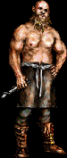

|  |
Though well renown throughout the land for his superb skill as a master weapon smith, Fehr’loi Qan himself could not be considered the sharpest sword on the rack. The large man’s slow speech seems out of place in the high brow city of Barloque. You get the impression that he is uncomfortable with strangers, but his great size and clear devotion to Kraanan makes him afraid of no one.
|
||||||||